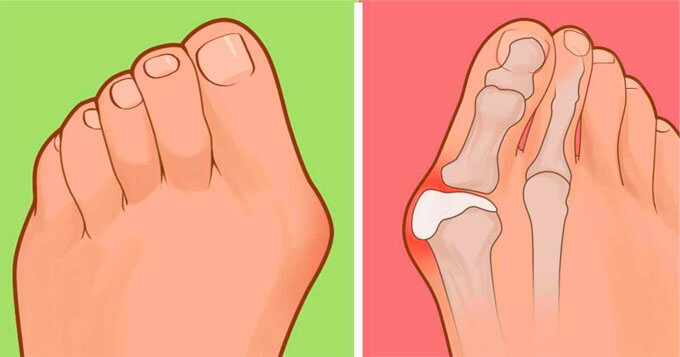
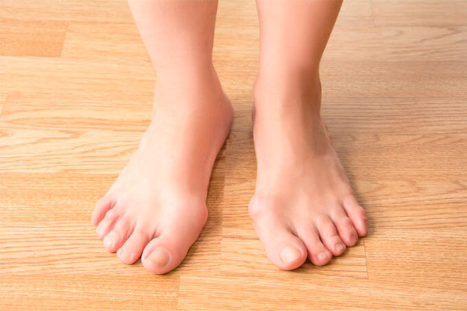
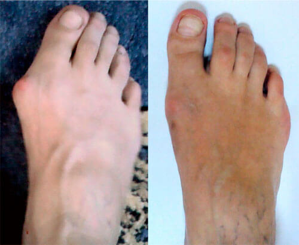

«Много лет страдаю от выпирающей косточки на ноге. Слышала, что существует несколько видов операций по устранению этого дефекта. Очень боюсь оперативного вмешательства, может, существуют какие-то другие способы борьбы с этим?»
На вопрос отвечает врач-ортопед, кандидат медицинских наук, Олег Петров
То, о чем вы говорите – выпирающая косточка – называется hallux valgus. Такая деформация стопы в виде шишек у большого пальца с возрастом возникает у 60% людей.
В переводе с греческого языка hallux означает «большой палец», а valgus – «отклонение наружу». Название говорит само за себя. В медицинской терминологии это заболевание называется «вальгусная деформация первого пальца стопы».
Это не просто эстетическая проблема, зачастую вальгусная деформация первого пальца стопы вызывает дискомфорт и даже болевые ощущения. Человек испытывает трудности с подбором обуви, приходится выбирать ортопедические модели, широкие, без каблука и прочих изысков.

Каковы причины развития вальгуса?
Основной причиной развития этого заболевания является недостаточность соединительной ткани, которая выражается в поперечном плоскостопии, чрезмерной подвижности сустава, варикозе, повышенной растяжимости связок.
Высокие каблуки зачастую становятся причиной возникновения этого заболевания. Дело в том, что обувь на высоком каблуке полностью переносит центр тяжести на верхнюю часть стопы, вызывая ее деформацию.
Еще одна причина hallux valgus – отложение солей в суставе. Это происходит из-за нарушения обмена солей мочевой кислоты. По мере прогрессирования болезни суставы пальцев обезображиваются, увеличиваются в размерах. Кристаллы солей травмируют сустав, вызывая боль.

Можно ли вылечить вальгус?
Операционных методов лечения hallux valgus существует, действительно, много. Однако после каждого оперативного вмешательства следует долгий и болезненный период восстановления. Нужно понимать, что операция – это крайняя мера, к которой врачи рекомендуют прибегать только в особо тяжелых случаях, когда человек уже утратил возможность ходить самостоятельно. К тому же, у многих пациентов присутствуют различные противопоказания к операции – возраст, лишний вес, диабет и т.д.
В менее запущенных случаях можно обойтись применением наружных средств. Скажу сразу – различные шины малоэффективны при лечении вальгусной деформации. Исходя из собственного практического опыта могу сказать, что наибольшего эффекта удается достичь с помощью средства под названием
Osteowell.
Этот препарат состоит только из натуральных компонентов, которые проникают вглубь сустава с помощью специального трансдермального агента, выводит излишки солей и накопленную жидкость. Нормализует кровообращение, способствует укреплению соединительной ткани, улучшает выработку коллагена – строительного материала наших суставов, связок и кровеносных сосудов.
Как будет выглядеть стопа после лечения Osteowell?
Где можно приобрести Osteowell?
Комментарии
У меня такое выявил врач на медицинском педикюре 9 лет назад. Пробовала лечиться с помощью шин и ортопедических стелек – все напрасно. Попробую Osteowell, у ваших пациентов потрясающие результаты!
Многие люди этим страдают( у моей мамы такое, ничего не могу заставить ее делать
Где-то читала, что это наследственность, ну и неправильная обувь, конечно, способствует. Хотя я всегда носила только удобную, качественную обувь, каблуки очень редко, а вот тоже косточка стала выпирать. Вкладыши из аптеки не очень помогают
Очень неприятная проблема. Страдаю этим уже лет пять, все началось с плоскостопия. Заказал Osteowell, буду лечиться
Да, это действительно очень эффективное средство! Пользовался им два месяца, от шишки не осталось и следа.

У меня как раз косточка образовалась из-за постоянного ношения каблуков( всегда очень любила такую обувь, а сейчас могу себе позволить только кроссовки. Спортивная обувь совершенно не подходит к моему стилю в одежде, выгляжу в этих кроссах дурацких абсолютно несуразно… Тоже заказала себе Osteowell, очень хочется снова встать на каблук(
Спасибо за полезную статью и рекомендации!
А я вот каблуков не носил никогда, но в 50 лет вылезла кость и с тех пор жутко мешала жить. Очень болели ноги, уставали, мог ходить по городу только короткими перебежками. Пробовал различные средства, но помог мне именно
Osteowell. Так что очень рекомендую!
Заказала по вашему совету, за три дня пришла посылка, начинаю лечение!